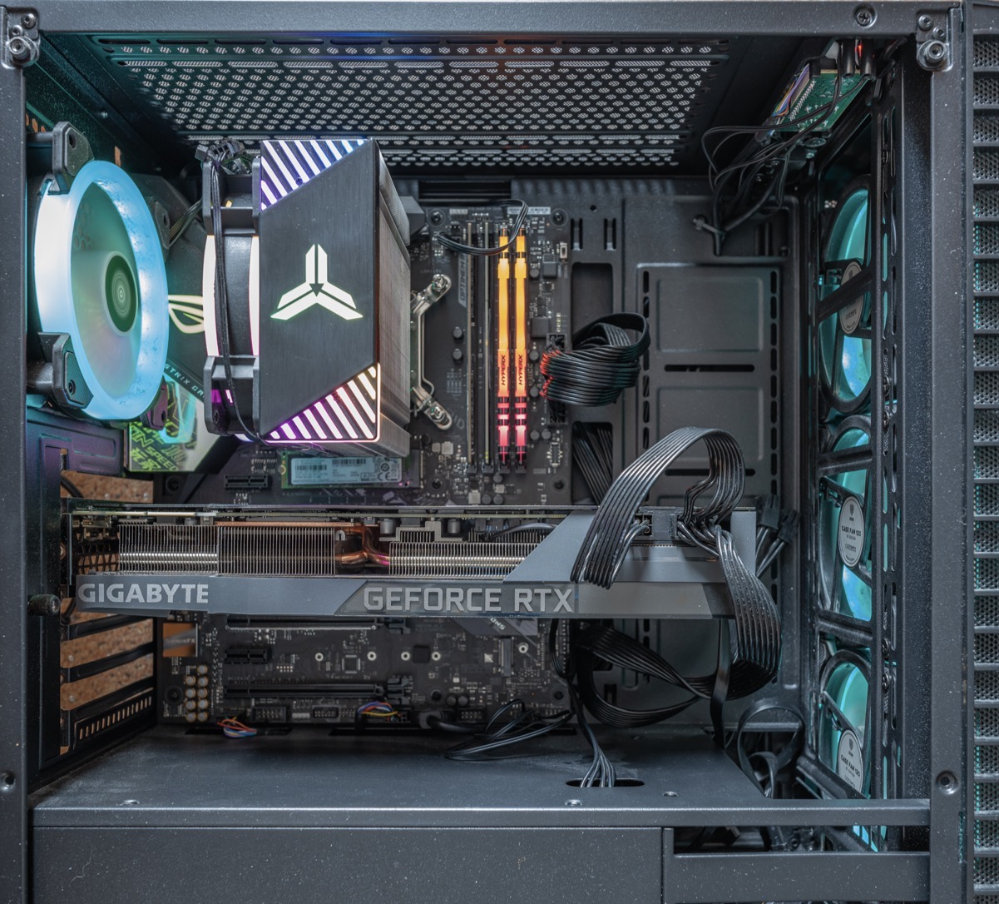
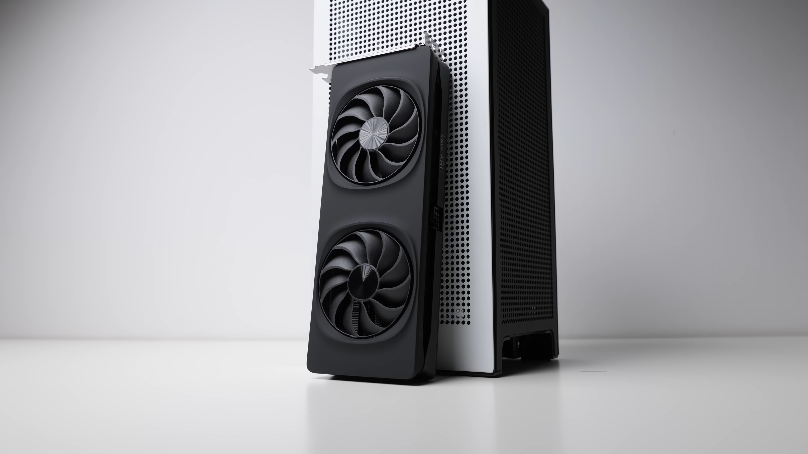
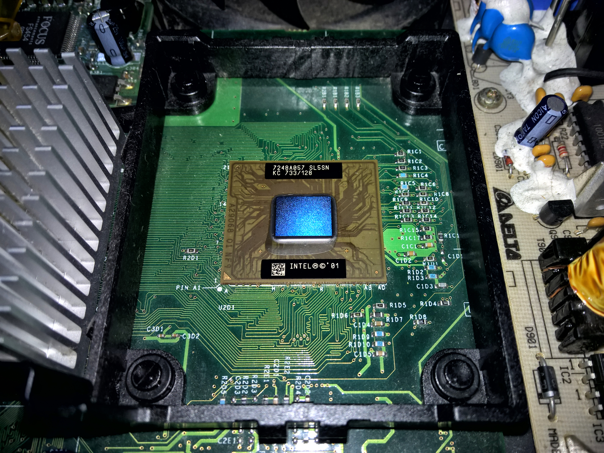

PC gaming has become one of the most popular ways to play video games. Unlike consoles, gaming computers allow players to customize their hardware and adjust settings to improve performance. Many gamers prefer PCs because they can upgrade individual components instead of replacing the entire system.
Gaming technology has improved significantly over the years. Modern computers use powerful graphics cards, processors, and high-speed memory to run demanding games. These improvements allow players to experience better graphics, smoother gameplay, and higher frame rates.
One of the most important parts of a gaming computer is the graphics processing unit, also known as the GPU. The GPU is responsible for rendering the images and graphics displayed during gameplay. A more powerful graphics card can help games run at higher resolutions and frame rates. Popular GPU manufacturers include NVIDIA and AMD.
The central processing unit, or CPU, is another important component of a gaming PC. It handles instructions and calculations that allow games and other programs to function. Random access memory, or RAM, also plays a major role by temporarily storing information that the computer needs to access quickly. Having a balanced combination of these components helps create a smoother gaming experience.
For more information about gaming computers and technology, visit these websites:
Here are some examples of the hardware used in modern gaming computers.



| Component | Purpose | Example |
|---|---|---|
| GPU | Processes graphics | NVIDIA GeForce RTX |
| CPU | Processes instructions | AMD Ryzen |
| RAM | Temporary memory | 16GB DDR4 |
| Storage | Stores games and files | 1TB SSD |